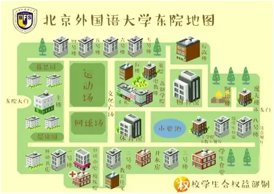

あなたの北外生活、ここから。一张地图，
一张地图，
新的校园生活。
你是日本留学生佐藤 悠。背包里装着一张东院地图，手机里只有语伴林同学的一条留言。你的北外冒险，现在开始。
点击地图探索 · 场景中操作物品 · 人物对话与日语读音
动词变形 · 会话纠错 · 志愿者调度。假名键盘支持触屏作答；答错可订正。
東キャンパス／你的冒险地图

小碧池林同学的新消息
「北外へようこそ！」
先在东院大门见吧。我有个小任务想请你帮忙。